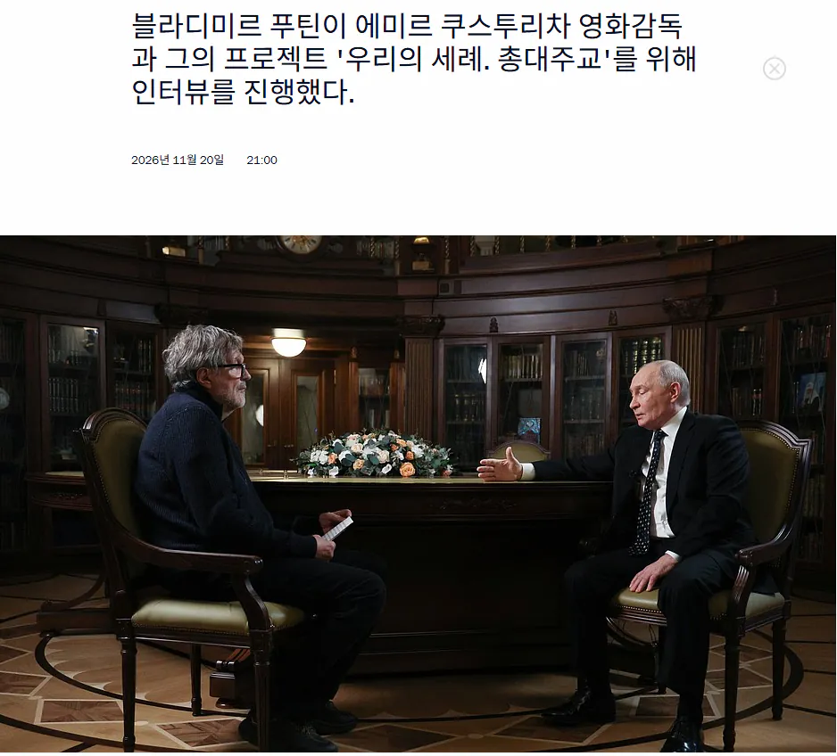
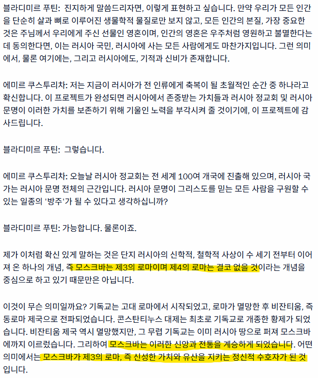
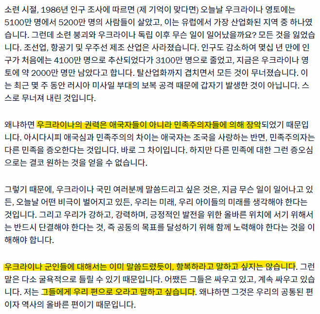
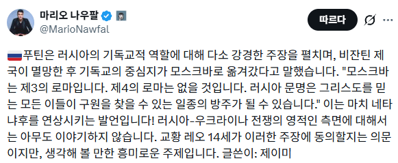
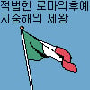
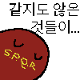

https://youtu.be/z6g0x5mQgY4?si=TF67O_QZ-khNLUUx
크렘린궁에서 공개한 인터뷰 전문
1분 44초경 발언



http://en.kremlin.ru/events/president/news/81318
크렘린궁 홈페이지에서 공개한 인터뷰 전문
"비잔티움 제국은 멸망했지만 모스크바로 신앙과 전통을 계승했으며, 모스크바가 제3의 로마로 기독교의 신성한 가치와 유산을 지키는 정신적 수호자가 되었다."

댓글
수집 당시 댓글 36개
국세청장 · 1 일 전
게살버거비법 · 1 일 전
저 이론에 따르면 로마 - 동로마 비잔티움 - 동동로마 모스크바 - 동동동로마로 이어지는건데
모스크바 동쪽으로 기독교가 번성한 도시는 서울뿐임
· 냐곰냐곰 · 13 시간 전
정확히는 일제시대 이전까지는 평양쪽이긴함.
· 쥬지털 · 8 시간 전
마닐라 있음
· Purplerain · 4 시간 전
필리핀?
· Purplerain · 4 시간 전
아르메니아, 조지아도 있네.
· 북원로터리 · 4 시간 전
걔들은 로마랑 관련없는 근본 기독교인걸
· Purplerain · 4 시간 전
그러니까, 기독교 맞잖아?
· 미소노미카 · 4 시간 전
상징적으로는 서울이 아니라 평양임. 평양은 동방의 예루살렘이었음
치쿠비 · 1 일 전
터키 아닌가
· 중갑부대1 · 4 시간 전
애매한게 터키는 기독교 버림…
그나마 구교에서 갈라져나온게 러시아 정교회이긴함 ㅋㅋ
서로마는 진즉에 멸망하고 다시 세운거라 정통성 없기도하고
글만 놓고보면 문제없는데 메신져가 일베 여시 같은 놈이라 문제 ㅋㅋ
· 치쿠비 · 4 시간 전
남로당프락치 · 1 일 전
아니 뭐 친애비가 누군지도 모르는 목수 양아들이 유대교 불법 2차 창작한 게 기독교고
이미 이슬람처럼 성공적인 3차 창작 있으니까 푸틴이 2.5차 창작 해도 누가 뭐라고 할 수 있나
군밤의왕 · 1 일 전
로마 드립은 유럽에서 영국 빼고 대부분이 주장할 수 있는거긴해
Vv연옥의사신vV · 1 일 전

할배냄새 · 13 시간 전

카페알파 · 8 시간 전
러시아는 원래 저랬어ㅋㅋ
동행복권 · 5 시간 전
꼬부욱 · 4 시간 전
진정한 로마의 후예는 우리인데?
환경파괴범캐리어 · 4 시간 전
신성하지도로마도제국도아닌..
괘법르네시떼 · 4 시간 전
카케구루이 · 4 시간 전
진정한 후예는 꼬레아 아니였음?
코지알 · 4 시간 전
지랄 똥싸는소리를 당연하다는듯이 하네 ㄷㄷ
좆냥이는닥붐 · 4 시간 전
원래 저랬음.
크리스피삼겹살 · 4 시간 전
러시아는 옛날부터 종교, 이데올로기에 미쳐있었어
세류동히드라 · 4 시간 전
맞는 말이긴 해
8c316df7 · 4 시간 전
불태우겠다고?
IIllllIIIlI · 4 시간 전
유럽의 문명과 힘의이동으로 볼때
그리스->로마->카톨릭//비잔틴제국->스페인/포르투갈->네덜란드->영국/프랑스&..(독일)->미국
이중 진정한 로마 계승자는 미국뿐이라고 봄
통합된 다문화의 결집으로 만들어진 힘과 문명
· 시므 · 2 시간 전
이게 맞지 질서 세우는게 패권국이고 그게 로마임
보직변경 · 4 시간 전
로마노프 왕조 부활하냐?
51번째주 · 4 시간 전
서방은 로마 카톨릭이고 비잔틴은 정교회였음 러시아도 정교회고
완전한UPPIE · 4 시간 전
Erino · 4 시간 전
진정한 후예는 대한민국뿐이다 애송아
트리플맥스 · 4 시간 전
제3의 로마를 다시 꺼내오는건 대체 몇년을 거슬러 올라가는거냐고
NoSugar · 4 시간 전
소로마는 러시아로 조중화는 한국으로 소브리튼은 미국으로 이 2국이 유럽 아시아 아메리카 대륙을 다스리기로 이번에 합의함.
차이월드 · 3 시간 전
엥 내가 지금 대한민국 로마특별시에 있는데 쟤 뭔소리하냐